- 00 开篇词 业务代码真的会有这么多坑？.md.html
- 01 使用了并发工具类库，线程安全就高枕无忧了吗？.md.html
- 02 代码加锁：不要让“锁”事成为烦心事.md.html
- 03 线程池：业务代码最常用也最容易犯错的组件.md.html
- 04 连接池：别让连接池帮了倒忙.md.html
- 05 HTTP调用：你考虑到超时、重试、并发了吗？.md.html
- 06 2成的业务代码的Spring声明式事务，可能都没处理正确.md.html
- 07 数据库索引：索引并不是万能药.md.html
- 08 判等问题：程序里如何确定你就是你？.md.html
- 09 数值计算：注意精度、舍入和溢出问题.md.html
- 10 集合类：坑满地的List列表操作.md.html
- 11 空值处理：分不清楚的null和恼人的空指针.md.html
- 12 异常处理：别让自己在出问题的时候变为瞎子.md.html
- 13 日志：日志记录真没你想象的那么简单.md.html
- 14 文件IO：实现高效正确的文件读写并非易事.md.html
- 15 序列化：一来一回你还是原来的你吗？.md.html
- 16 用好Java 8的日期时间类，少踩一些“老三样”的坑.md.html
- 17 别以为“自动挡”就不可能出现OOM.md.html
- 18 当反射、注解和泛型遇到OOP时，会有哪些坑？.md.html
- 19 Spring框架：IoC和AOP是扩展的核心.md.html
- 20 Spring框架：框架帮我们做了很多工作也带来了复杂度.md.html
- 21 代码重复：搞定代码重复的三个绝招.md.html
- 22 接口设计：系统间对话的语言，一定要统一.md.html
- 23 缓存设计：缓存可以锦上添花也可以落井下石.md.html
- 24 业务代码写完，就意味着生产就绪了？.md.html
- 25 异步处理好用，但非常容易用错.md.html
- 26 数据存储：NoSQL与RDBMS如何取长补短、相辅相成？.md.html
- 27 数据源头：任何客户端的东西都不可信任.md.html
- 28 安全兜底：涉及钱时，必须考虑防刷、限量和防重.md.html
- 29 数据和代码：数据就是数据，代码就是代码.md.html
- 30 如何正确保存和传输敏感数据？.md.html
- 31 加餐1：带你吃透课程中Java 8的那些重要知识点（一）.md.html
- 32 加餐2：带你吃透课程中Java 8的那些重要知识点（二）.md.html
- 33 加餐3：定位应用问题，排错套路很重要.md.html
- 34 加餐4：分析定位Java问题，一定要用好这些工具（一）.md.html
- 35 加餐5：分析定位Java问题，一定要用好这些工具（二）.md.html
- 36 加餐6：这15年来，我是如何在工作中学习技术和英语的？.md.html
- 37 加餐7：程序员成长28计.md.html
- 38 加餐8：Java程序从虚拟机迁移到Kubernetes的一些坑.md.html
- 答疑篇：代码篇思考题集锦（一）.md.html
- 答疑篇：代码篇思考题集锦（三）.md.html
- 答疑篇：代码篇思考题集锦（二）.md.html
- 答疑篇：加餐篇思考题答案合集.md.html
- 答疑篇：安全篇思考题答案合集.md.html
- 答疑篇：设计篇思考题答案合集.md.html
- 结束语 写代码时，如何才能尽量避免踩坑？.md.html
24 业务代码写完，就意味着生产就绪了？
你好，我是朱晔。今天，我们来聊聊业务代码写完，是不是就意味着生产就绪，可以直接投产了。
所谓生产就绪（Production-ready），是指应用开发完成要投入生产环境，开发层面需要额外做的一些工作。在我看来，如果应用只是开发完成了功能代码，然后就直接投产，那意味着应用其实在裸奔。在这种情况下，遇到问题因为缺乏有效的监控导致无法排查定位问题，同时很可能遇到问题我们自己都不知道，需要依靠用户反馈才知道应用出了问题。
那么，生产就绪需要做哪些工作呢？我认为，以下三方面的工作最重要。
第一，提供健康检测接口。传统采用 ping 的方式对应用进行探活检测并不准确。有的时候，应用的关键内部或外部依赖已经离线，导致其根本无法正常工作，但其对外的 Web 端口或管理端口是可以 ping 通的。我们应该提供一个专有的监控检测接口，并尽可能触达一些内部组件。
第二，暴露应用内部信息。应用内部诸如线程池、内存队列等组件，往往在应用内部扮演了重要的角色，如果应用或应用框架可以对外暴露这些重要信息，并加以监控，那么就有可能在诸如 OOM 等重大问题暴露之前发现蛛丝马迹，避免出现更大的问题。
第三，建立应用指标 Metrics 监控。Metrics 可以翻译为度量或者指标，指的是对于一些关键信息以可聚合的、数值的形式做定期统计，并绘制出各种趋势图表。这里的指标监控，包括两个方面：一是，应用内部重要组件的指标监控，比如 JVM 的一些指标、接口的 QPS 等；二是，应用的业务数据的监控，比如电商订单量、游戏在线人数等。
今天，我就通过实际案例，和你聊聊如何快速实现这三方面的工作。
准备工作：配置 Spring Boot Actuator
Spring Boot 有一个 Actuator 模块，封装了诸如健康检测、应用内部信息、Metrics 指标等生产就绪的功能。今天这一讲后面的内容都是基于 Actuator 的，因此我们需要先完成 Actuator 的引入和配置。
我们可以像这样在 pom 中通过添加依赖的方式引入 Actuator：
<dependency>
<groupId>org.springframework.boot</groupId>
<artifactId>spring-boot-starter-actuator</artifactId>
</dependency>
之后，你就可以直接使用 Actuator 了，但还要注意一些重要的配置：
如果你不希望 Web 应用的 Actuator 管理端口和应用端口重合的话，可以使用 management.server.port 设置独立的端口。
Actuator 自带了很多开箱即用提供信息的端点（Endpoint），可以通过 JMX 或 Web 两种方式进行暴露。考虑到有些信息比较敏感，这些内置的端点默认不是完全开启的，你可以通过官网查看这些默认值。在这里，为了方便后续 Demo，我们设置所有端点通过 Web 方式开启。
默认情况下，Actuator 的 Web 访问方式的根地址为 /actuator，可以通过 management.endpoints.web.base-path 参数进行修改。我来演示下，如何将其修改为 /admin。
management.server.port=45679
management.endpoints.web.exposure.include=*
management.endpoints.web.base-path=/admin
现在，你就可以访问 http://localhost:45679/admin ，来查看 Actuator 的所有功能 URL 了：
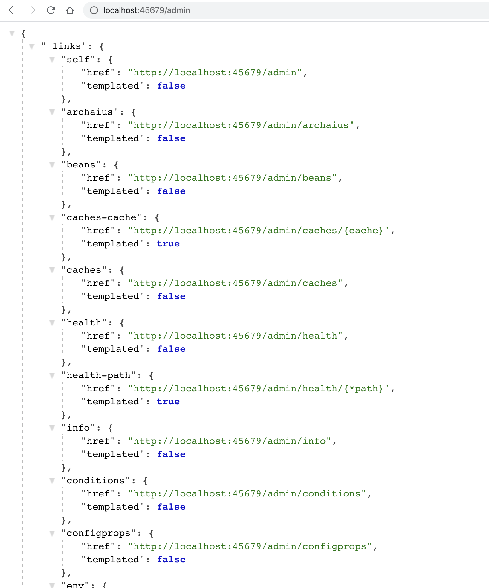
其中，大部分端点提供的是只读信息，比如查询 Spring 的 Bean、ConfigurableEnvironment、定时任务、SpringBoot 自动配置、Spring MVC 映射等；少部分端点还提供了修改功能，比如优雅关闭程序、下载线程 Dump、下载堆 Dump、修改日志级别等。
你可以访问这里，查看所有这些端点的功能，详细了解它们提供的信息以及实现的操作。此外，我再分享一个不错的 Spring Boot 管理工具Spring Boot Admin，它把大部分 Actuator 端点提供的功能封装为了 Web UI。
健康检测需要触达关键组件
在这一讲开始我们提到，健康检测接口可以让监控系统或发布工具知晓应用的真实健康状态，比 ping 应用端口更可靠。不过，要达到这种效果最关键的是，我们能确保健康检测接口可以探查到关键组件的状态。
好在 Spring Boot Actuator 帮我们预先实现了诸如数据库、InfluxDB、Elasticsearch、Redis、RabbitMQ 等三方系统的健康检测指示器 HealthIndicator。
通过 Spring Boot 的自动配置，这些指示器会自动生效。当这些组件有问题的时候，HealthIndicator 会返回 DOWN 或 OUT_OF_SERVICE 状态，health 端点 HTTP 响应状态码也会变为 503，我们可以以此来配置程序健康状态监控报警。
为了演示，我们可以修改配置文件，把 management.endpoint.health.show-details 参数设置为 always，让所有用户都可以直接查看各个组件的健康情况（如果配置为 when-authorized，那么可以结合 management.endpoint.health.roles 配置授权的角色）：
management.endpoint.health.show-details=always
访问 health 端点可以看到，数据库、磁盘、RabbitMQ、Redis 等组件健康状态是 UP，整个应用的状态也是 UP：
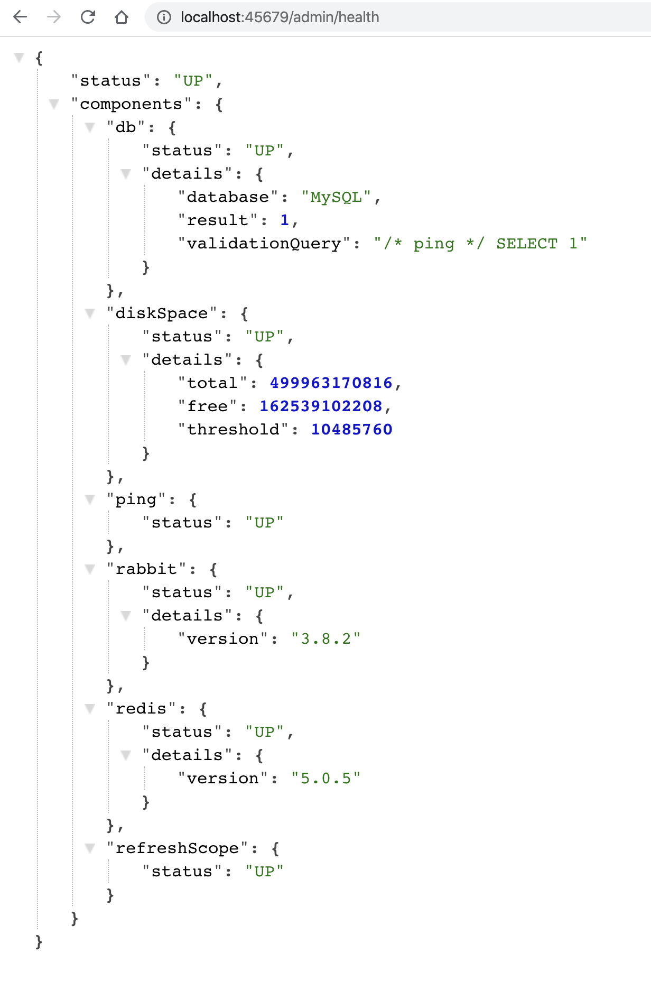
在了解了基本配置之后，我们考虑一下，如果程序依赖一个很重要的三方服务，我们希望这个服务无法访问的时候，应用本身的健康状态也是 DOWN。
比如三方服务有一个 user 接口，出现异常的概率是 50%：
@Slf4j
@RestController
@RequestMapping("user")
public class UserServiceController {
@GetMapping
public User getUser(@RequestParam("userId") long id) {
//一半概率返回正确响应，一半概率抛异常
if (ThreadLocalRandom.current().nextInt() % 2 == 0)
return new User(id, "name" + id);
else
throw new RuntimeException("error");
}
}
要实现这个 user 接口是否正确响应和程序整体的健康状态挂钩的话，很简单，只需定义一个 UserServiceHealthIndicator 实现 HealthIndicator 接口即可。
在 health 方法中，我们通过 RestTemplate 来访问这个 user 接口，如果结果正确则返回 Health.up()，并把调用执行耗时和结果作为补充信息加入 Health 对象中。如果调用接口出现异常，则返回 Health.down()，并把异常信息作为补充信息加入 Health 对象中：
@Component
@Slf4j
public class UserServiceHealthIndicator implements HealthIndicator {
@Autowired
private RestTemplate restTemplate;
@Override
public Health health() {
long begin = System.currentTimeMillis();
long userId = 1L;
User user = null;
try {
//访问远程接口
user = restTemplate.getForObject("http://localhost:45678/user?userId=" + userId, User.class);
if (user != null && user.getUserId() == userId) {
//结果正确，返回UP状态，补充提供耗时和用户信息
return Health.up()
.withDetail("user", user)
.withDetail("took", System.currentTimeMillis() - begin)
.build();
} else {
//结果不正确，返回DOWN状态，补充提供耗时
return Health.down().withDetail("took", System.currentTimeMillis() - begin).build();
}
} catch (Exception ex) {
//出现异常，先记录异常，然后返回DOWN状态，补充提供异常信息和耗时
log.warn("health check failed!", ex);
return Health.down(ex).withDetail("took", System.currentTimeMillis() - begin).build();
}
}
}
我们再来看一个聚合多个 HealthIndicator 的案例，也就是定义一个 CompositeHealthContributor 来聚合多个 HealthContributor，实现一组线程池的监控。
首先，在 ThreadPoolProvider 中定义两个线程池，其中 demoThreadPool 是包含一个工作线程的线程池，类型是 ArrayBlockingQueue，阻塞队列的长度为 10；还有一个 ioThreadPool 模拟 IO 操作线程池，核心线程数 10，最大线程数 50：
public class ThreadPoolProvider {
//一个工作线程的线程池，队列长度10
private static ThreadPoolExecutor demoThreadPool = new ThreadPoolExecutor(
1, 1,
2, TimeUnit.SECONDS,
new ArrayBlockingQueue<>(10),
new ThreadFactoryBuilder().setNameFormat("demo-threadpool-%d").get());
//核心线程数10，最大线程数50的线程池，队列长度50
private static ThreadPoolExecutor ioThreadPool = new ThreadPoolExecutor(
10, 50,
2, TimeUnit.SECONDS,
new ArrayBlockingQueue<>(100),
new ThreadFactoryBuilder().setNameFormat("io-threadpool-%d").get());
public static ThreadPoolExecutor getDemoThreadPool() {
return demoThreadPool;
}
public static ThreadPoolExecutor getIOThreadPool() {
return ioThreadPool;
}
}
然后，我们定义一个接口，来把耗时很长的任务提交到这个 demoThreadPool 线程池，以模拟线程池队列满的情况：
@GetMapping("slowTask")
public void slowTask() {
ThreadPoolProvider.getDemoThreadPool().execute(() -> {
try {
TimeUnit.HOURS.sleep(1);
} catch (InterruptedException e) {
}
});
}
做了这些准备工作后，让我们来真正实现自定义的 HealthIndicator 类，用于单一线程池的健康状态。
我们可以传入一个 ThreadPoolExecutor，通过判断队列剩余容量来确定这个组件的健康状态，有剩余量则返回 UP，否则返回 DOWN，并把线程池队列的两个重要数据，也就是当前队列元素个数和剩余量，作为补充信息加入 Health：
public class ThreadPoolHealthIndicator implements HealthIndicator {
private ThreadPoolExecutor threadPool;
public ThreadPoolHealthIndicator(ThreadPoolExecutor threadPool) {
this.threadPool = threadPool;
}
@Override
public Health health() {
//补充信息
Map<String, Integer> detail = new HashMap<>();
//队列当前元素个数
detail.put("queue_size", threadPool.getQueue().size());
//队列剩余容量
detail.put("queue_remaining", threadPool.getQueue().remainingCapacity());
//如果还有剩余量则返回UP，否则返回DOWN
if (threadPool.getQueue().remainingCapacity() > 0) {
return Health.up().withDetails(detail).build();
} else {
return Health.down().withDetails(detail).build();
}
}
}
再定义一个 CompositeHealthContributor，来聚合两个 ThreadPoolHealthIndicator 的实例，分别对应 ThreadPoolProvider 中定义的两个线程池：
@Component
public class ThreadPoolsHealthContributor implements CompositeHealthContributor {
//保存所有的子HealthContributor
private Map<String, HealthContributor> contributors = new HashMap<>();
ThreadPoolsHealthContributor() {
//对应ThreadPoolProvider中定义的两个线程池
this.contributors.put("demoThreadPool", new ThreadPoolHealthIndicator(ThreadPoolProvider.getDemoThreadPool()));
this.contributors.put("ioThreadPool", new ThreadPoolHealthIndicator(ThreadPoolProvider.getIOThreadPool()));
}
@Override
public HealthContributor getContributor(String name) {
//根据name找到某一个HealthContributor
return contributors.get(name);
}
@Override
public Iterator<NamedContributor<HealthContributor>> iterator() {
//返回NamedContributor的迭代器，NamedContributor也就是Contributor实例+一个命名
return contributors.entrySet().stream()
.map((entry) -> NamedContributor.of(entry.getKey(), entry.getValue())).iterator();
}
}
程序启动后可以看到，health 接口展现了线程池和外部服务 userService 的健康状态，以及一些具体信息：
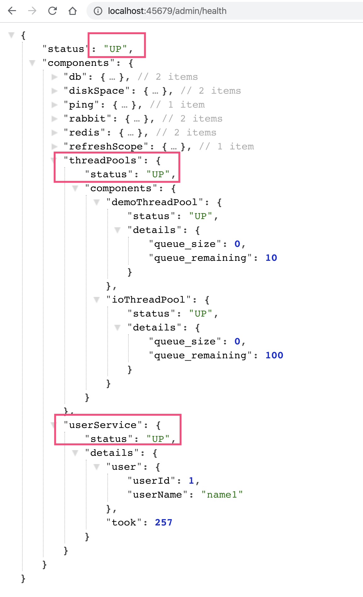
我们看到一个 demoThreadPool 为 DOWN 导致父 threadPools 为 DOWN，进一步导致整个程序的 status 为 DOWN：
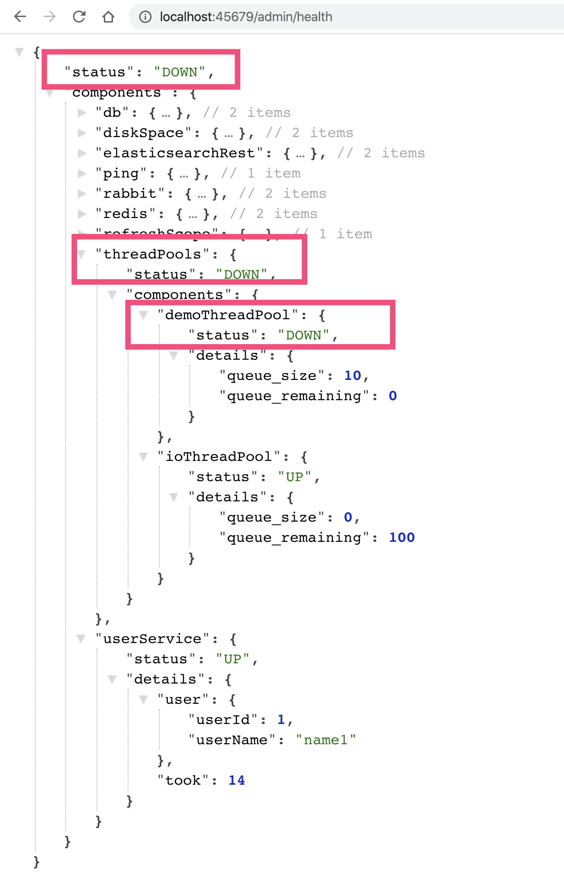
以上，就是通过自定义 HealthContributor 和 CompositeHealthContributor，来实现监控检测触达程序内部诸如三方服务、线程池等关键组件，是不是很方便呢？
额外补充一下，Spring Boot 2.3.0增强了健康检测的功能，细化了 Liveness 和 Readiness 两个端点，便于 Spring Boot 应用程序和 Kubernetes 整合。
对外暴露应用内部重要组件的状态
除了可以把线程池的状态作为整个应用程序是否健康的依据外，我们还可以通过 Actuator 的 InfoContributor 功能，对外暴露程序内部重要组件的状态数据。这里，我会用一个例子演示使用 info 的 HTTP 端点、JMX MBean 这两种方式，如何查看状态数据。
我们看一个具体案例，实现一个 ThreadPoolInfoContributor 来展现线程池的信息。
@Component
public class ThreadPoolInfoContributor implements InfoContributor {
private static Map threadPoolInfo(ThreadPoolExecutor threadPool) {
Map<String, Object> info = new HashMap<>();
info.put("poolSize", threadPool.getPoolSize());//当前池大小
info.put("corePoolSize", threadPool.getCorePoolSize());//设置的核心池大小
info.put("largestPoolSize", threadPool.getLargestPoolSize());//最大达到过的池大小
info.put("maximumPoolSize", threadPool.getMaximumPoolSize());//设置的最大池大小
info.put("completedTaskCount", threadPool.getCompletedTaskCount());//总完成任务数
return info;
}
@Override
public void contribute(Info.Builder builder) {
builder.withDetail("demoThreadPool", threadPoolInfo(ThreadPoolProvider.getDemoThreadPool()));
builder.withDetail("ioThreadPool", threadPoolInfo(ThreadPoolProvider.getIOThreadPool()));
}
}
访问 /admin/info 接口，可以看到这些数据：
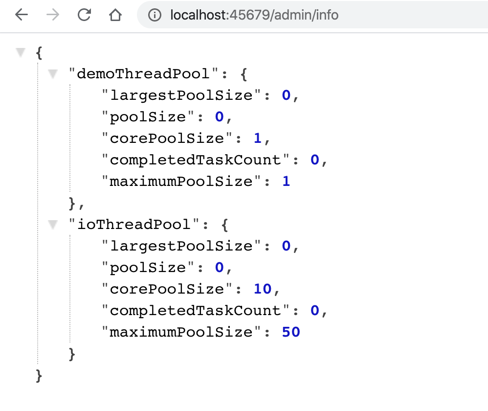
此外，如果设置开启 JMX 的话：
spring.jmx.enabled=true
可以通过 jconsole 工具，在 org.springframework.boot.Endpoint 中找到 Info 这个 MBean，然后执行 info 操作可以看到，我们刚才自定义的 InfoContributor 输出的有关两个线程池的信息：
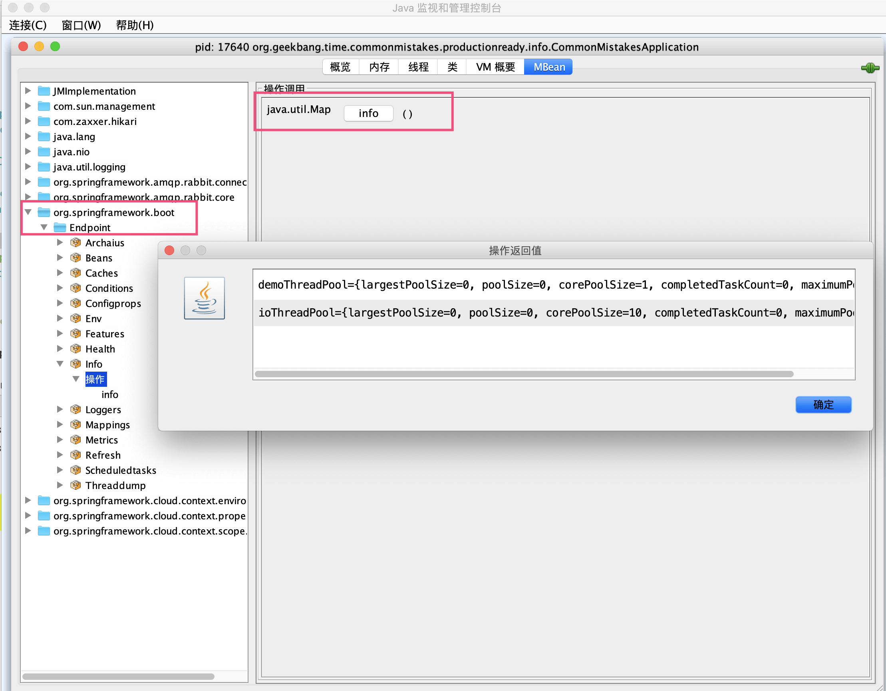
这里，我再额外补充一点。对于查看和操作 MBean，除了使用 jconsole 之外，你可以使用 jolokia 把 JMX 转换为 HTTP 协议，引入依赖：
<dependency>
<groupId>org.jolokia</groupId>
<artifactId>jolokia-core</artifactId>
</dependency>
然后，你就可以通过 jolokia，来执行 org.springframework.boot:type=Endpoint,name=Info 这个 MBean 的 info 操作：
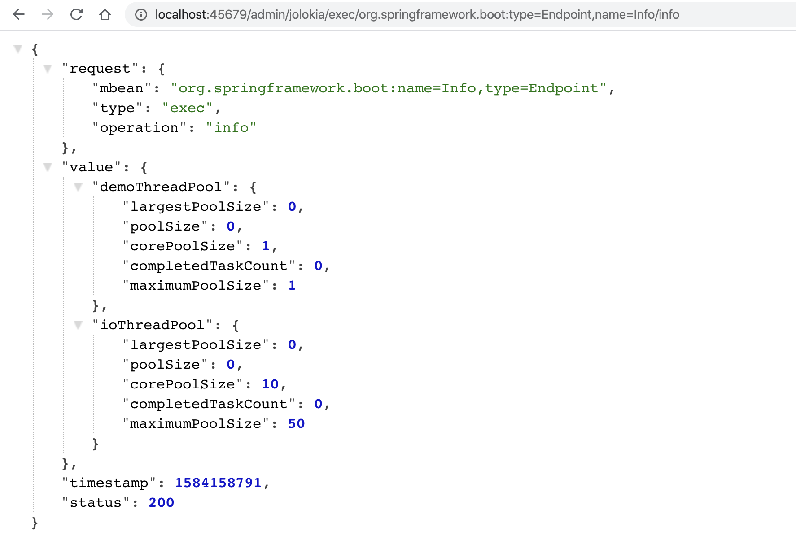
指标 Metrics 是快速定位问题的“金钥匙”
指标是指一组和时间关联的、衡量某个维度能力的量化数值。通过收集指标并展现为曲线图、饼图等图表，可以帮助我们快速定位、分析问题。
我们通过一个实际的案例，来看看如何通过图表快速定位问题。
有一个外卖订单的下单和配送流程，如下图所示。OrderController 进行下单操作，下单操作前先判断参数，如果参数正确调用另一个服务查询商户状态，如果商户在营业的话继续下单，下单成功后发一条消息到 RabbitMQ 进行异步配送流程；然后另一个 DeliverOrderHandler 监听这条消息进行配送操作。
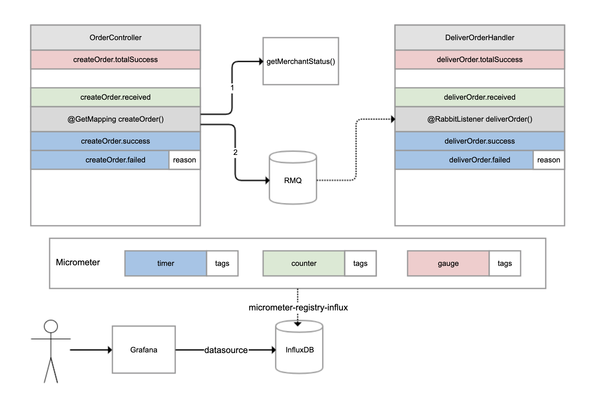
对于这样一个涉及同步调用和异步调用的业务流程，如果用户反馈下单失败，那我们如何才能快速知道是哪个环节出了问题呢？
这时，指标体系就可以发挥作用了。我们可以分别为下单和配送这两个重要操作，建立一些指标进行监控。
对于下单操作，可以建立 4 个指标：
下单总数量指标，监控整个系统当前累计的下单量；
下单请求指标，对于每次收到下单请求，在处理之前 +1；
下单成功指标，每次下单成功完成 +1；
下单失败指标，下单操作处理出现异常 +1，并且把异常原因附加到指标上。
对于配送操作，也是建立类似的 4 个指标。我们可以使用 Micrometer 框架实现指标的收集，它也是 Spring Boot Actuator 选用的指标框架。它实现了各种指标的抽象，常用的有三种：
gauge（红色），它反映的是指标当前的值，是多少就是多少，不能累计，比如本例中的下单总数量指标，又比如游戏的在线人数、JVM 当前线程数都可以认为是 gauge。
counter（绿色），每次调用一次方法值增加 1，是可以累计的，比如本例中的下单请求指标。举一个例子，如果 5 秒内我们调用了 10 次方法，Micrometer 也是每隔 5 秒把指标发送给后端存储系统一次，那么它可以只发送一次值，其值为 10。
timer（蓝色），类似 counter，只不过除了记录次数，还记录耗时，比如本例中的下单成功和下单失败两个指标。
所有的指标还可以附加一些 tags 标签，作为补充数据。比如，当操作执行失败的时候，我们就会附加一个 reason 标签到指标上。
Micrometer 除了抽象了指标外，还抽象了存储。你可以把 Micrometer 理解为类似 SLF4J 这样的框架，只不过后者针对日志抽象，而 Micrometer 是针对指标进行抽象。Micrometer 通过引入各种 registry，可以实现无缝对接各种监控系统或时间序列数据库。
在这个案例中，我们引入了 micrometer-registry-influx 依赖，目的是引入 Micrometer 的核心依赖，以及通过 Micrometer 对于InfluxDB（InfluxDB 是一个时间序列数据库，其专长是存储指标数据）的绑定，以实现指标数据可以保存到 InfluxDB：
<dependency>
<groupId>io.micrometer</groupId>
<artifactId>micrometer-registry-influx</artifactId>
</dependency>
然后，修改配置文件，启用指标输出到 InfluxDB 的开关、配置 InfluxDB 的地址，以及设置指标每秒在客户端聚合一次，然后发送到 InfluxDB：
management.metrics.export.influx.enabled=true
management.metrics.export.influx.uri=http://localhost:8086
management.metrics.export.influx.step=1S
接下来，我们在业务逻辑中增加相关的代码来记录指标。
下面是 OrderController 的实现，代码中有详细注释，我就不一一说明了。你需要注意观察如何通过 Micrometer 框架，来实现下单总数量、下单请求、下单成功和下单失败这四个指标，分别对应代码的第 17、25、43、47 行：
//下单操作，以及商户服务的接口
@Slf4j
@RestController
@RequestMapping("order")
public class OrderController {
//总订单创建数量
private AtomicLong createOrderCounter = new AtomicLong();
@Autowired
private RabbitTemplate rabbitTemplate;
@Autowired
private RestTemplate restTemplate;
@PostConstruct
public void init() {
//注册createOrder.received指标，gauge指标只需要像这样初始化一次，直接关联到AtomicLong引用即可
Metrics.gauge("createOrder.totalSuccess", createOrderCounter);
}
//下单接口，提供用户ID和商户ID作为入参
@GetMapping("createOrder")
public void createOrder(@RequestParam("userId") long userId, @RequestParam("merchantId") long merchantId) {
//记录一次createOrder.received指标，这是一个counter指标，表示收到下单请求
Metrics.counter("createOrder.received").increment();
Instant begin = Instant.now();
try {
TimeUnit.MILLISECONDS.sleep(200);
//模拟无效用户的情况，ID<10为无效用户
if (userId < 10)
throw new RuntimeException("invalid user");
//查询商户服务
Boolean merchantStatus = restTemplate.getForObject("http://localhost:45678/order/getMerchantStatus?merchantId=" + merchantId, Boolean.class);
if (merchantStatus == null || !merchantStatus)
throw new RuntimeException("closed merchant");
Order order = new Order();
order.setId(createOrderCounter.incrementAndGet()); //gauge指标可以得到自动更新
order.setUserId(userId);
order.setMerchantId(merchantId);
//发送MQ消息
rabbitTemplate.convertAndSend(Consts.EXCHANGE, Consts.ROUTING_KEY, order);
//记录一次createOrder.success指标，这是一个timer指标，表示下单成功，同时提供耗时
Metrics.timer("createOrder.success").record(Duration.between(begin, Instant.now()));
} catch (Exception ex) {
log.error("creareOrder userId {} failed", userId, ex);
//记录一次createOrder.failed指标，这是一个timer指标，表示下单失败，同时提供耗时，并且以tag记录失败原因
Metrics.timer("createOrder.failed", "reason", ex.getMessage()).record(Duration.between(begin, Instant.now()));
}
}
//商户查询接口
@GetMapping("getMerchantStatus")
public boolean getMerchantStatus(@RequestParam("merchantId") long merchantId) throws InterruptedException {
//只有商户ID为2的商户才是营业的
TimeUnit.MILLISECONDS.sleep(200);
return merchantId == 2;
}
}
当用户 ID<10 的时候，我们模拟用户数据无效的情况，当商户 ID 不为 2 的时候我们模拟商户不营业的情况。
接下来是 DeliverOrderHandler 配送服务的实现。
其中，deliverOrder 方法监听 OrderController 发出的 MQ 消息模拟配送。如下代码所示，第 17、25、32 和 36 行代码，实现了配送相关四个指标的记录：
//配送服务消息处理程序
@RestController
@Slf4j
@RequestMapping("deliver")
public class DeliverOrderHandler {
//配送服务运行状态
private volatile boolean deliverStatus = true;
private AtomicLong deliverCounter = new AtomicLong();
//通过一个外部接口来改变配送状态模拟配送服务停工
@PostMapping("status")
public void status(@RequestParam("status") boolean status) {
deliverStatus = status;
}
@PostConstruct
public void init() {
//同样注册一个gauge指标deliverOrder.totalSuccess，代表总的配送单量，只需注册一次即可
Metrics.gauge("deliverOrder.totalSuccess", deliverCounter);
}
//监听MQ消息
@RabbitListener(queues = Consts.QUEUE_NAME)
public void deliverOrder(Order order) {
Instant begin = Instant.now();
//对deliverOrder.received进行递增，代表收到一次订单消息，counter类型
Metrics.counter("deliverOrder.received").increment();
try {
if (!deliverStatus)
throw new RuntimeException("deliver outofservice");
TimeUnit.MILLISECONDS.sleep(500);
deliverCounter.incrementAndGet();
//配送成功指标deliverOrder.success，timer类型
Metrics.timer("deliverOrder.success").record(Duration.between(begin, Instant.now()));
} catch (Exception ex) {
log.error("deliver Order {} failed", order, ex);
//配送失败指标deliverOrder.failed，同样附加了失败原因作为tags，timer类型
Metrics.timer("deliverOrder.failed", "reason", ex.getMessage()).record(Duration.between(begin, Instant.now()));
}
}
}
同时，我们模拟了一个配送服务整体状态的开关，调用 status 接口可以修改其状态。至此，我们完成了场景准备，接下来开始配置指标监控。
首先，我们来安装 Grafana。然后进入 Grafana 配置一个 InfluxDB 数据源：
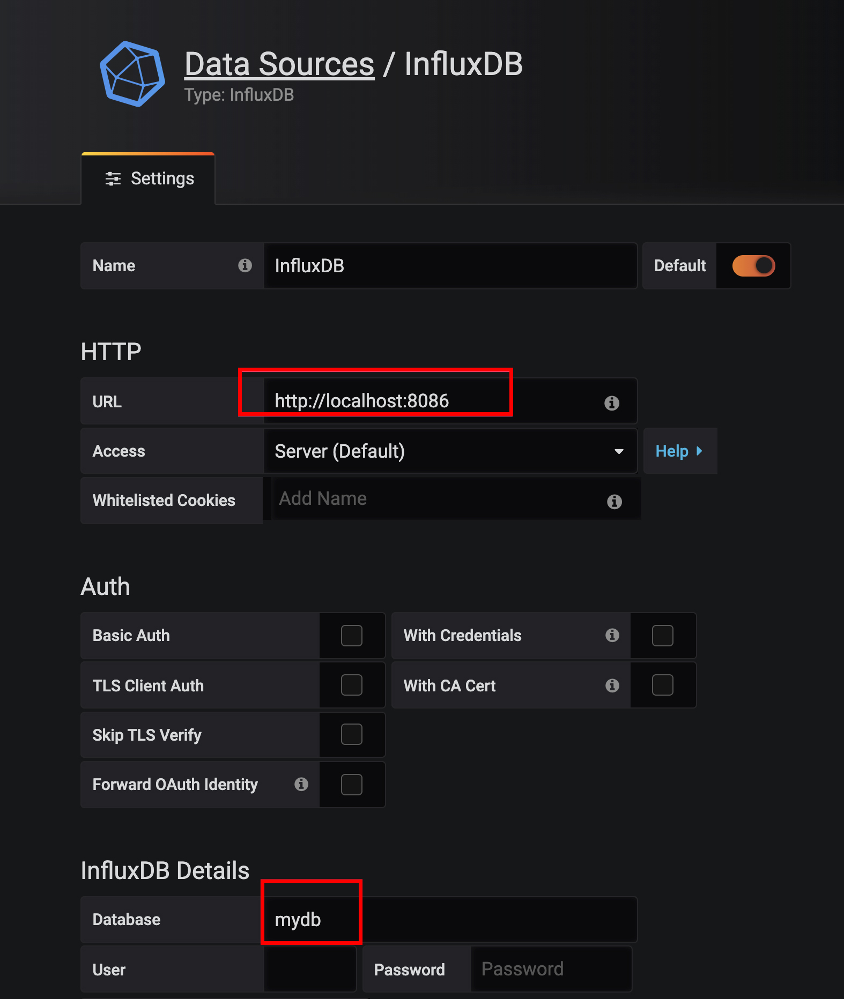
配置好数据源之后，就可以添加一个监控面板，然后在面板中添加各种监控图表。比如，我们在一个下单次数图表中添加了下单收到、成功和失败三个指标。
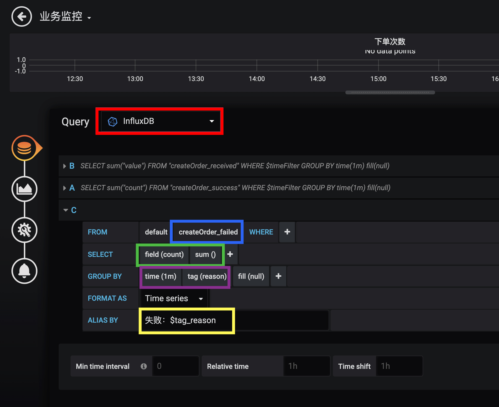
关于这张图中的配置：
红色框数据源配置，选择刚才配置的数据源。
蓝色框 FROM 配置，选择我们的指标名。
绿色框 SELECT 配置，选择我们要查询的指标字段，也可以应用一些聚合函数。在这里，我们取 count 字段的值，然后使用 sum 函数进行求和。
紫色框 GROUP BY 配置，我们配置了按 1 分钟时间粒度和 reason 字段进行分组，这样指标的 Y 轴代表 QPM（每分钟请求数），且每种失败的情况都会绘制单独的曲线。
黄色框 ALIAS BY 配置中设置了每一个指标的别名，在别名中引用了 reason 这个 tag。
使用 Grafana 配置 InfluxDB 指标的详细方式，你可以参考这里。其中的 FROM、SELECT、GROUP BY 的含义和 SQL 类似，理解起来应该不困难。
类似地， 我们配置出一个完整的业务监控面板，包含之前实现的 8 个指标：
配置 2 个 Gauge 图表分别呈现总订单完成次数、总配送完成次数。
配置 4 个 Graph 图表分别呈现下单操作的次数和性能，以及配送操作的次数和性能。
下面我们进入实战，使用 wrk 针对四种情况进行压测，然后通过曲线来分析定位问题。
第一种情况是，使用合法的用户 ID 和营业的商户 ID 运行一段时间：
wrk -t 1 -c 1 -d 3600s http://localhost:45678/order/createOrder\?userId\=20\&merchantId\=2
从监控面板可以一目了然地看到整个系统的运作情况。可以看到，目前系统运行良好，不管是下单还是配送操作都是成功的，且下单操作平均处理时间 400ms、配送操作则是在 500ms 左右，符合预期（注意，下单次数曲线中的绿色和黄色两条曲线其实是重叠在一起的，表示所有下单都成功了）：
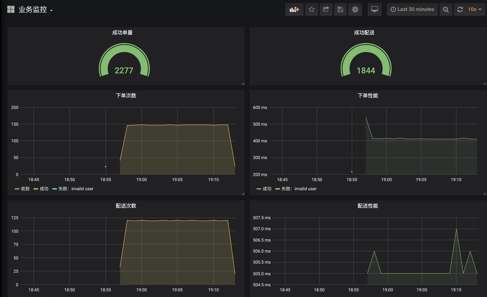
第二种情况是，模拟无效用户 ID 运行一段时间：
wrk -t 1 -c 1 -d 3600s http://localhost:45678/order/createOrder\?userId\=2\&merchantId\=2
使用无效用户下单，显然会导致下单全部失败。接下来，我们就看看从监控图中是否能看到这个现象。
绿色框可以看到，下单现在出现了 invalid user 这条蓝色的曲线，并和绿色收到下单请求的曲线是吻合的，表示所有下单都失败了，原因是无效用户错误，说明源头并没有问题。
红色框可以看到，虽然下单都是失败的，但是下单操作时间从 400ms 减少为 200ms 了，说明下单失败之前也消耗了 200ms（和代码符合）。而因为下单失败操作的响应时间减半了，反而导致吞吐翻倍了。
观察两个配送监控可以发现，配送曲线出现掉 0 现象，是因为下单失败导致的，下单失败 MQ 消息压根就不会发出。再注意下蓝色那条线，可以看到配送曲线掉 0 延后于下单成功曲线的掉 0，原因是配送走的是异步流程，虽然从某个时刻开始下单全部失败了，但是 MQ 队列中还有一些之前未处理的消息。
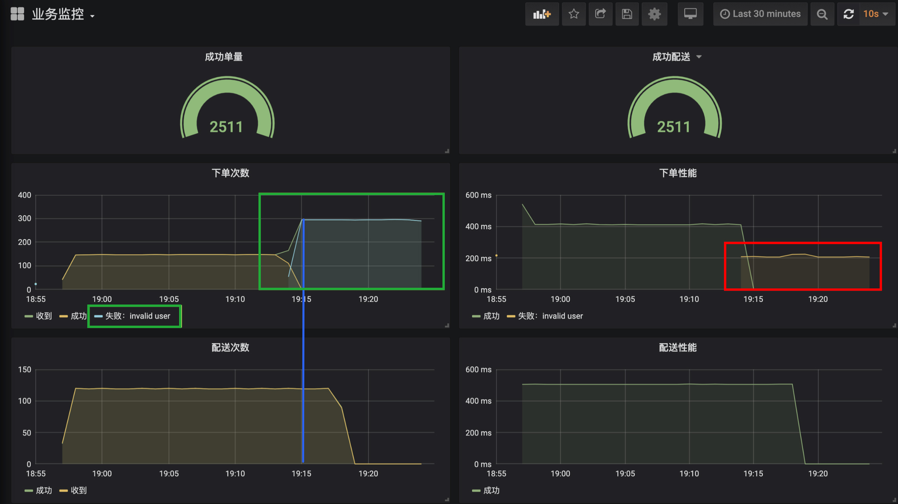
第三种情况是，尝试一下因为商户不营业导致的下单失败：
wrk -t 1 -c 1 -d 3600s http://localhost:45678/order/createOrder\?userId\=20\&merchantId\=1
我把变化的地方圈了出来，你可以自己尝试分析一下：
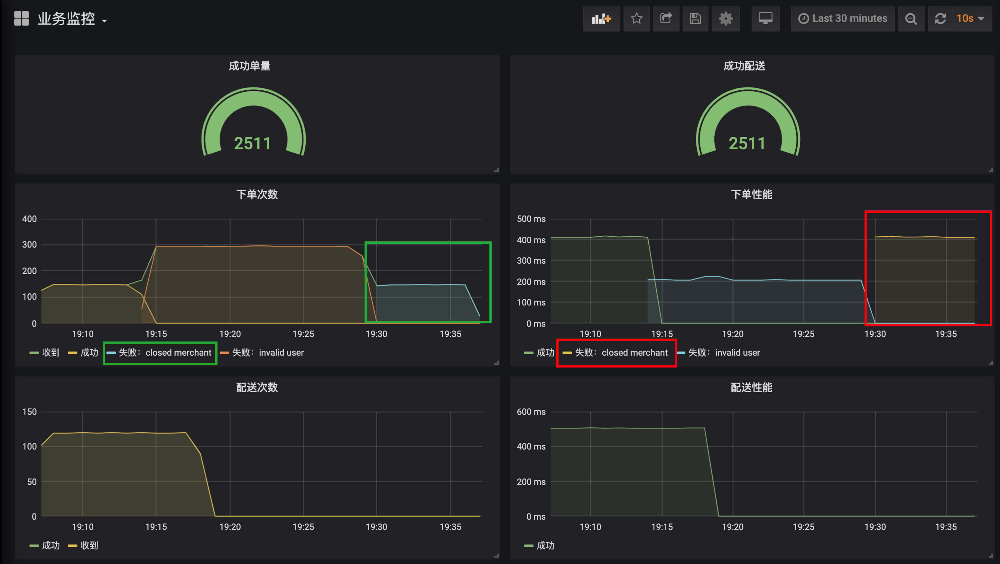
第四种情况是，配送停止。我们通过 curl 调用接口，来设置配送停止开关：
curl -X POST 'http://localhost:45678/deliver/status?status=false'
从监控可以看到，从开关关闭那刻开始，所有的配送消息全部处理失败了，原因是 deliver outofservice，配送操作性能从 500ms 左右到了 0ms，说明配送失败是一个本地快速失败，并不是因为服务超时等导致的失败。而且虽然配送失败，但下单操作都是正常的：
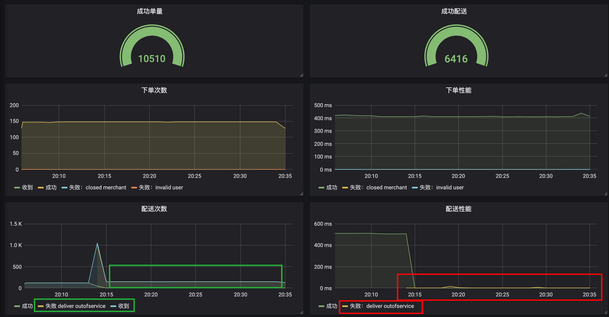
最后希望说的是，除了手动添加业务监控指标外，Micrometer 框架还帮我们自动做了很多有关 JVM 内部各种数据的指标。进入 InfluxDB 命令行客户端，你可以看到下面的这些表（指标），其中前 8 个是我们自己建的业务指标，后面都是框架帮我们建的 JVM、各种组件状态的指标：
\> USE mydb
Using database mydb
\> SHOW MEASUREMENTS
name: measurements
name
\----
createOrder_failed
createOrder_received
createOrder_success
createOrder_totalSuccess
deliverOrder_failed
deliverOrder_received
deliverOrder_success
deliverOrder_totalSuccess
hikaricp_connections
hikaricp_connections_acquire
hikaricp_connections_active
hikaricp_connections_creation
hikaricp_connections_idle
hikaricp_connections_max
hikaricp_connections_min
hikaricp_connections_pending
hikaricp_connections_timeout
hikaricp_connections_usage
http_server_requests
jdbc_connections_max
jdbc_connections_min
jvm_buffer_count
jvm_buffer_memory_used
jvm_buffer_total_capacity
jvm_classes_loaded
jvm_classes_unloaded
jvm_gc_live_data_size
jvm_gc_max_data_size
jvm_gc_memory_allocated
jvm_gc_memory_promoted
jvm_gc_pause
jvm_memory_committed
jvm_memory_max
jvm_memory_used
jvm_threads_daemon
jvm_threads_live
jvm_threads_peak
jvm_threads_states
logback_events
process_cpu_usage
process_files_max
process_files_open
process_start_time
process_uptime
rabbitmq_acknowledged
rabbitmq_acknowledged_published
rabbitmq_channels
rabbitmq_connections
rabbitmq_consumed
rabbitmq_failed_to_publish
rabbitmq_not_acknowledged_published
rabbitmq_published
rabbitmq_rejected
rabbitmq_unrouted_published
spring_rabbitmq_listener
system_cpu_count
system_cpu_usage
system_load_average_1m
tomcat_sessions_active_current
tomcat_sessions_active_max
tomcat_sessions_alive_max
tomcat_sessions_created
tomcat_sessions_expired
tomcat_sessions_rejected
我们可以按照自己的需求，选取其中的一些指标，在 Grafana 中配置应用监控面板：
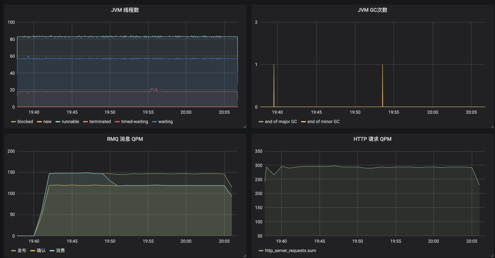
看到这里，通过监控图表来定位问题，是不是比日志方便了很多呢？
重点回顾
今天，我和你介绍了如何使用 Spring Boot Actuaor 实现生产就绪的几个关键点，包括健康检测、暴露应用信息和指标监控。
所谓磨刀不误砍柴工，健康检测可以帮我们实现负载均衡的联动；应用信息以及 Actuaor 提供的各种端点，可以帮我们查看应用内部情况，甚至对应用的一些参数进行调整；而指标监控，则有助于我们整体观察应用运行情况，帮助我们快速发现和定位问题。
其实，完整的应用监控体系一般由三个方面构成，包括日志 Logging、指标 Metrics 和追踪 Tracing。其中，日志和指标我相信你应该已经比较清楚了。追踪一般不涉及开发工作就没有展开阐述，我和你简单介绍一下。
追踪也叫做全链路追踪，比较有代表性的开源系统是SkyWalking和Pinpoint。一般而言，接入此类系统无需额外开发，使用其提供的 javaagent 来启动 Java 程序，就可以通过动态修改字节码实现各种组件的改写，以加入追踪代码（类似 AOP）。
全链路追踪的原理是：
请求进入第一个组件时，先生成一个 TraceID，作为整个调用链（Trace）的唯一标识；
对于每次操作，都记录耗时和相关信息形成一个 Span 挂载到调用链上，Span 和 Span 之间同样可以形成树状关联，出现远程调用、跨系统调用的时候，把 TraceID 进行透传（比如，HTTP 调用通过请求透传，MQ 消息则通过消息透传）；
把这些数据汇总提交到数据库中，通过一个 UI 界面查询整个树状调用链。
同时，我们一般会把 TraceID 记录到日志中，方便实现日志和追踪的关联。
我用一张图对比了日志、指标和追踪的区别和特点：

在我看来，完善的监控体系三者缺一不可，它们还可以相互配合，比如通过指标发现性能问题，通过追踪定位性能问题所在的应用和操作，最后通过日志定位出具体请求的明细参数。
今天用到的代码，我都放在了 GitHub 上，你可以点击这个链接查看。
思考与讨论
Spring Boot Actuator 提供了大量内置端点，你觉得端点和自定义一个 @RestController 有什么区别呢？你能否根据官方文档，开发一个自定义端点呢？
在介绍指标 Metrics 时我们看到，InfluxDB 中保存了由 Micrometer 框架自动帮我们收集的一些应用指标。你能否参考源码中两个 Grafana 配置的 JSON 文件，把这些指标在 Grafana 中配置出一个完整的应用监控面板呢？
应用投产之前，你还会做哪些生产就绪方面的工作呢？我是朱晔，欢迎在评论区与我留言分享你的想法，也欢迎你把今天的内容分享给你的朋友或同事，一起交流。